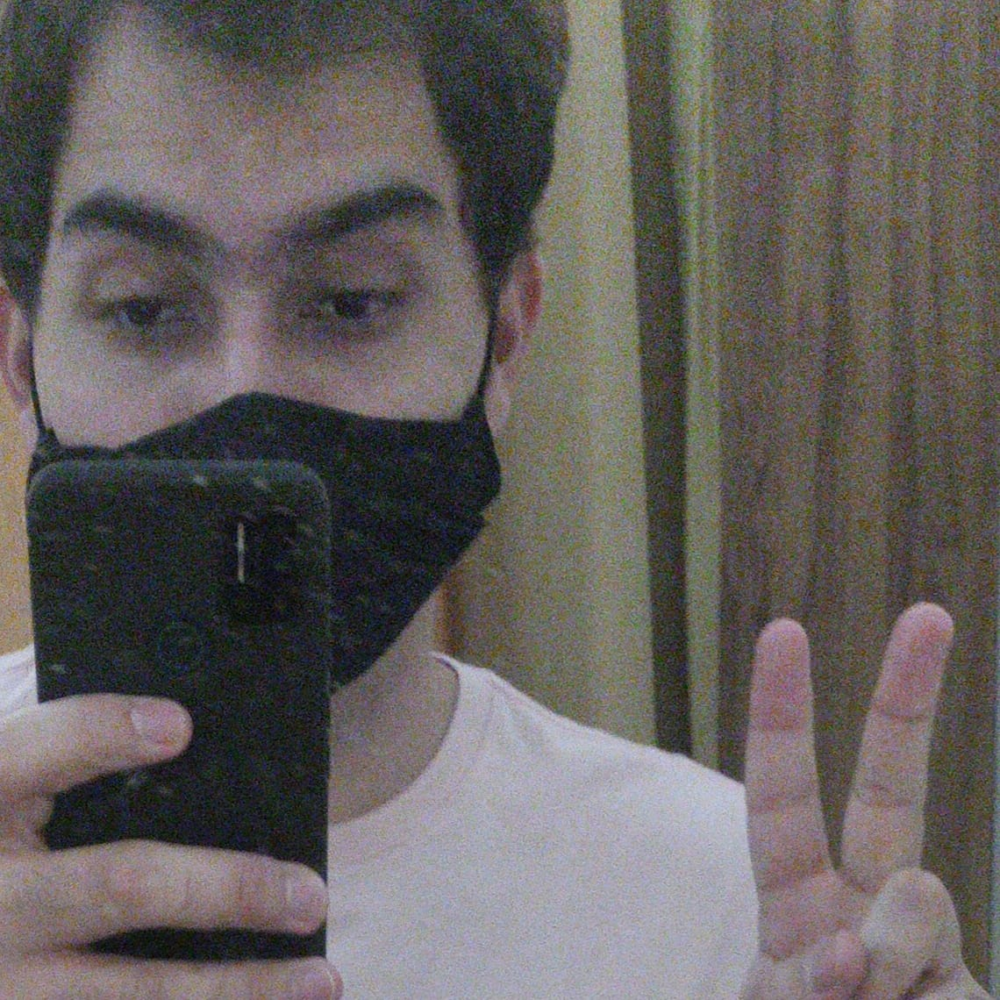
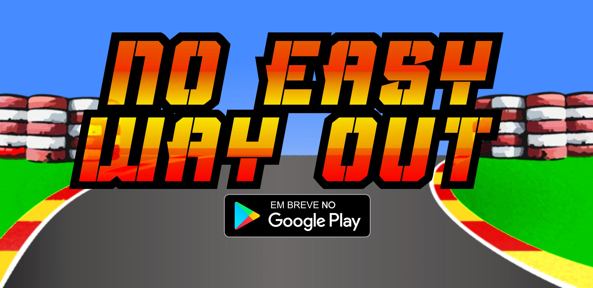
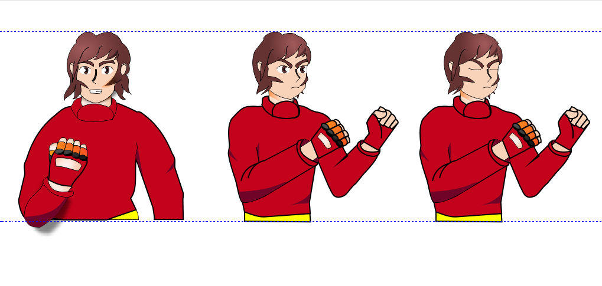

Sobre

Sou um programador residente em Cravinhos - São Paulo - Brasil, nascido em 7 de Julho de 1995.
Possuo conhecimentos em HTML, CSS, Javascript, PHP, SQL e Object Pascal (Delphi).
Formado em Análise e Densenvolvimento de Sistemas Pela Estácio de Sá, amo lidar com programação, desenvolvimento e coisas relacionadas à T.I. Sempre me impressiono com o quanto o mundo pode mudar apenas com pequenos projetos.
Projetos
Abaixo estão meus principais trabalhos já finalizados como desenvolvedor:
No Easy Way Out

Trata-se do desenvolvimento de um game 2d o qual estou desenvolvendo para dispositivos móveis e computador, para aperfeiçoar meus conhecimentos e realizar meu sonho de um dia criar e publicar meu próprio game.
Utilizando Javascript, HTML e CSS, tem o Phaser em sua programação.

A previsão para lançamento é para o primeiro semestre de 2023.
Através do link do facebook, será possível acompanhar atualizações do desenvolvimento do game.
Reserva de Mesas Online - Trabalho de Conclusão Etec 2016
Link para o repositorio